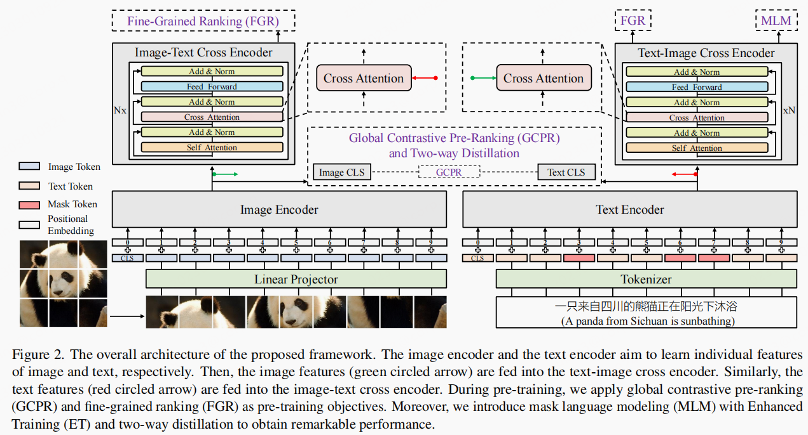
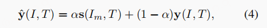

我个人对该文章提出的模型架构并不是很推崇，因为其设计不够优美，有点过于复杂了。
文章idea
- 中文多模态没有相应的数据集
文章主旨
该文章提出了中文的多模态模型 R2D2，并且发布了中文的多模态数据集 ZERO。
模型结构
数据库Zero介绍
- 预训练数据库
Zero-Corpus，是由2.5亿 图像和 7.5亿文本组成，约50亿图文对数据。 - 下游任务数据集，
Image-Caption Matching Dataset：40w 图文对［图像，文本描述］。 - 下游任务数据集，
Image-Query Matching Dataset：40w［图像，QUERY］ - 下游任务数据集，
Image-Caption Retrieval Dataset20w［ 以文搜图，以图搜文］ - 下游数据集，
Image-Query Retrieval Dataset20w［以文搜图，以图搜文］ - 下游数据集，
Flickr-30k-CNA Dataset针对Flickr-30k进行了高质量翻译和检查，数据集质量高于Flickr-30k-CN
模型细节

Text Encoder
使用的是 RoBerta-wwm-ext，其他的不做赘述。
Image Encoder
Image Encoder 使用的是 VIT，其他的不做赘述。
Cross Encoder
图像与文本的特征交叉有两个塔，使用的均是基于transformer-encoder，只是稍微做了一些调整。上图可以看到细节。
损失函数
损失函数有 3 个:MLM，GCPR，FGR
- MLM：不用过多赘述
- GCPR：本质上是对比损失，其考虑了多个 GPU 的反向传播情况？
- FGR：本质上是
ITM，但是根据模型的特殊结构，其用两部分组成的最终实现。
Two-way Distillation
这部分是使用自监督的思想实现，使用了 teacher-student 范式。
Target-guided Distillation
- 考虑到数据集中的噪音，因此并没有直接使用标签
y，而是soft target
 - 此处的
soft target比较有意思。主要是2点：
- 在原始目标
y的基础上增加了一个可变项。$I_m$是送入teacher网络的图像， - 引入
queue设计，保留最近几个step训练得到的中间变量，text 表征：$T_q$，图像表征：$I_q$。因此，此时计算loss的计算不仅仅局限于batch内部，考虑到模型训练而导致的队列中数据表征的有效性，每次迭代都将队列中的元素衰减权重设定为0.99。
- 以上设计可能考虑到
对比损失需要大batch 才有好的效果，这也只是猜测。